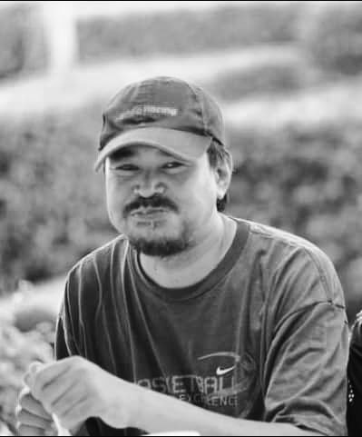

When talk about family, they are the physical to warm your sadden heart, keep you happy when others cant, supports you while others can betray you and the second most important thing in your life after Allah and His Messenger. Even Dom Torreto said "Family something something I don't remember". Aight enough Muqaddimah, let me introduce you to my family. Starting from the right is my sister, Areen Sofiya binti Zainul Abidin but all of my family including me call her "Cik Ya". She was my younger sis and the only daughter in the family. She currently in Form 4 waiting to entering boarding school. Next to her is Adib Arsyad bin Zainul Abidin. He was the yougest of all of us three siblings. He was a special child who suffered from Austism. He was a year younger than his sis and six years younger than me. The one who wear the black hijab is none other than our mother, Syarila binti Abdul Bahari. She was a beautiful, kind and the most awesome mum anyone could ever have who was born in Lipis but growup in Raub, Pahang and the last one is that four eyes, who was me lol. This is the photo of Aidilfitri last year. But wait.... So why only four of us? Where is my father? Daddy chill I'll explain down below.
This gigachad you see in the photo is no other than my old man, Zainul Abidin bin Sulong, The Perakian Gentleman. He was born in Bagan Datoh, Perak on 14th May 1968. He was a family-man. Do all he can to support the fam. A true leader, a romantic and caring husband and a loving father for us. In 2010, he was diagnosed with cancer but managed to fight his cancer by surgery. However in 2014, his cancer worsen and started to infected to other organs. In 2015, 10 days after his 47th birthday, he passed away with shahada, infront of me and my mum, five years after battling cancer making me the head of the family. May you rest in peace, ayah. I'll take care of Ummi and the family with all my life. Al-Fatihah.